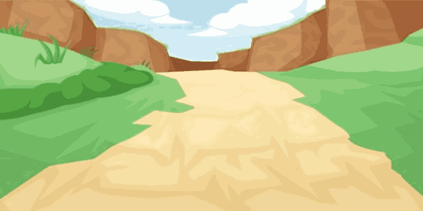
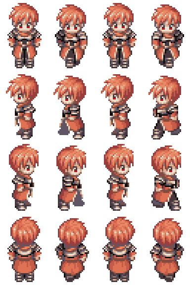

Sprite
Sprite 是一種連續圖像的電腦圖學技術，它把畫面中需要以動畫來展現的物體，另外裁切一小張的圖像來繪製，完成後再貼到畫面上，這樣就不用對整張畫面做繪圖的動作，降低電腦的計算負擔，是一種高速繪圖的技巧。
本章節將介紹在 HTML5 的 Canvas 實作 Sprite 的方式，我們準備兩張圖，一張是背景：background.png，一張是動畫用的人物：sprite.png，以連續圖像的原理製作動畫。


準備好了的話，請按一下「開始展示範例」，檢視本章節所要示範的案例……
原始碼